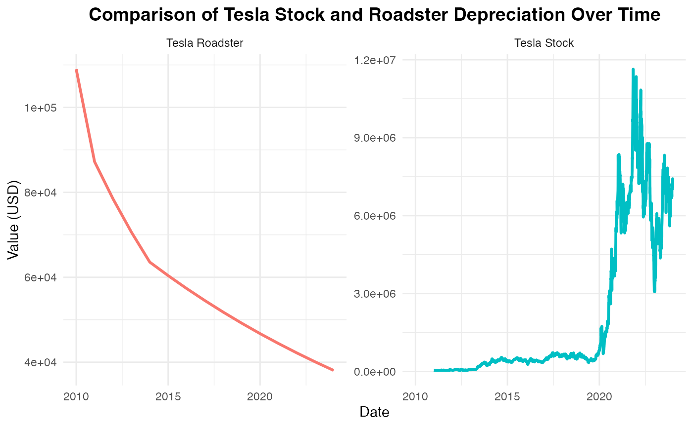

tesla.RmdThe TeslaInvestR package provides data and tools for
analyzing Tesla’s historical stock prices and the depreciation trends of
Tesla Roadsters. The package includes preprocessed datasets and
functions that enable users to visualize and explore these financial
trends interactively.
In this vignette, we will demonstrate how to use
TeslaInvestR for data exploration, analysis, and
visualization of Tesla-related investments.
To install TeslaInvestR from GitHub, use the following
commands:
# Specify a CRAN mirror and install 'remotes'
install.packages("remotes", repos = "https://cloud.r-project.org/")
# Install TeslaInvestR
remotes::install_github("ETC5523-2024/assignment-4-packages-and-shiny-apps-nnam0004")
# Example of running the Shiny app
library(TeslaInvestR)After installing the package, load the necessary libraries and the
datasets provided by TeslaInvestR.
The tesla_stock_filtered dataset contains historical
data on Tesla’s stock prices. We can take a quick look at the structure
of the dataset using head().
head(tesla_stock_filtered)The package includes a dataset on the depreciation values of Tesla Roadsters, allowing us to compare the stock’s growth to the car’s depreciation.
To create a comparison plot, we’ll: 1. Add an identifier for each
dataset (type column). 2. Combine the
tesla_stock_filtered and
roadster_value_filtered datasets into one data frame.
# Add identifier columns
tesla_stock_filtered <- tesla_stock_filtered %>%
dplyr::mutate(type = "Tesla Stock")
roadster_value_filtered <- roadster_value_filtered %>%
dplyr::mutate(type = "Tesla Roadster")
# Combine datasets for plotting
combined_data <- bind_rows(
tesla_stock_filtered %>% dplyr::select(Date, investment_value, type),
roadster_value_filtered %>% dplyr::rename(Date = date) %>% dplyr::select(Date, investment_value, type)
)Using ggplot2, we can plot the investment value over
time for both Tesla stock and Roadster depreciation. We’ll use
facet_wrap to separate the plots for easier comparison.
ggplot2::ggplot(combined_data, aes(x = Date, y = investment_value, color = type)) +
geom_line(size = 1) +
labs(
title = "Comparison of Tesla Stock and Roadster Depreciation Over Time",
x = "Date", y = "Value (USD)"
) +
facet_wrap(~type, scales = "free_y") + # Separate plots for stock and roadster
theme_minimal() +
theme(
plot.title = element_text(size = 14, face = "bold", hjust = 0.5),
legend.position = "none"
)
This side-by-side visualization provides an intuitive comparison of how Tesla stock has appreciated while the Roadster has depreciated.
The TeslaInvestR package provides preprocessed datasets
and functions that allow for easy exploration and visualization of
Tesla’s stock performance and the depreciation of Tesla Roadsters. This
vignette demonstrated how to load the data, prepare it for analysis, and
visualize these trends using ggplot2.
By using TeslaInvestR, users can quickly gain insights
into Tesla’s investment trends and make comparisons between stock and
vehicle depreciation.
For full documentation and tutorials, visit the pkgdown site here: TeslaInvestR Documentation.